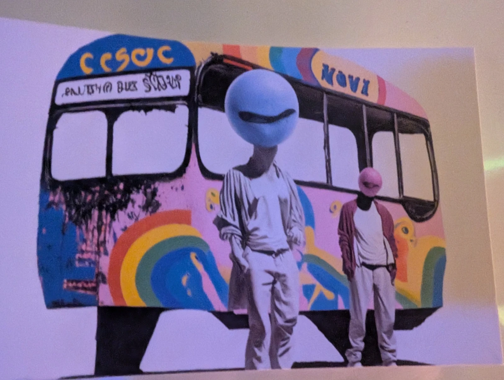

FROM THE SCREEN. INTO THE REAL WORLD.04 / A NOTE FROM THE ARTISTFor the things
For the things
that make you
LOOK TWICE.
This is my corner of the world. My art, the clothes I find, the things I bring home because there’s just something about them.
Some pieces stay exactly as I found them. Some get another life. And the artwork? The odd little details stay. They’re part of why I love it.
Come curious. Leave a little more you.
Deon Monai